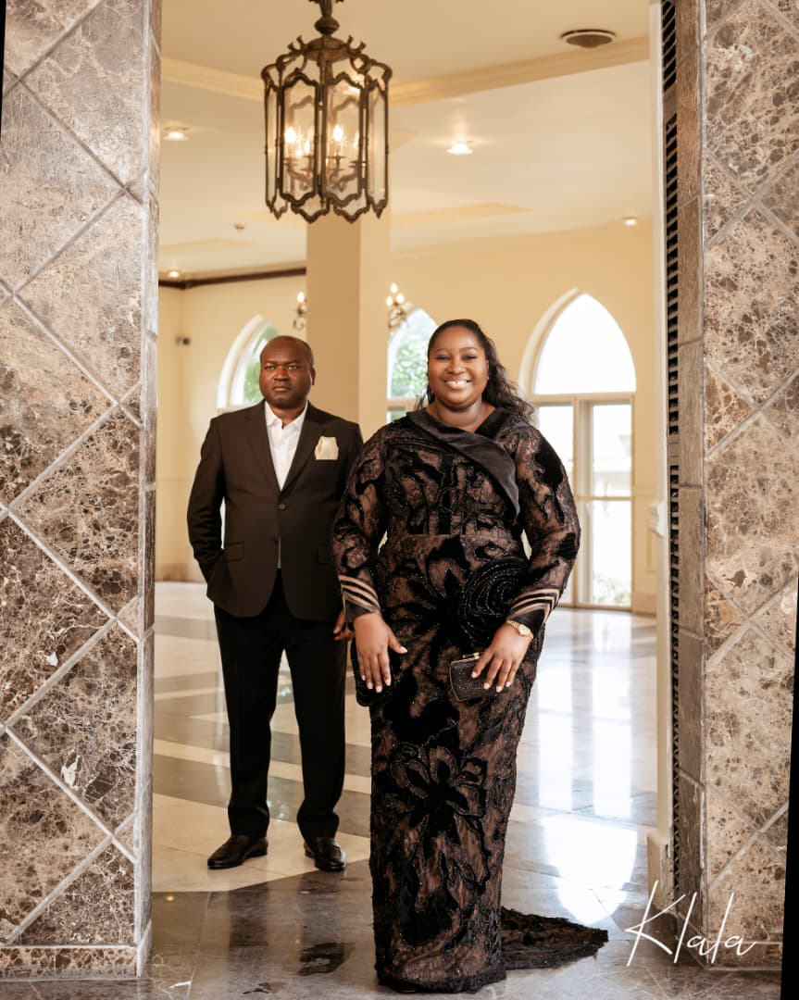
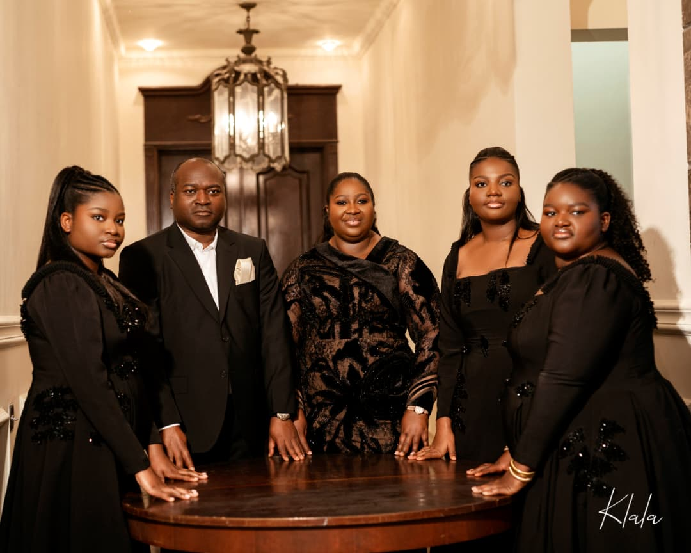
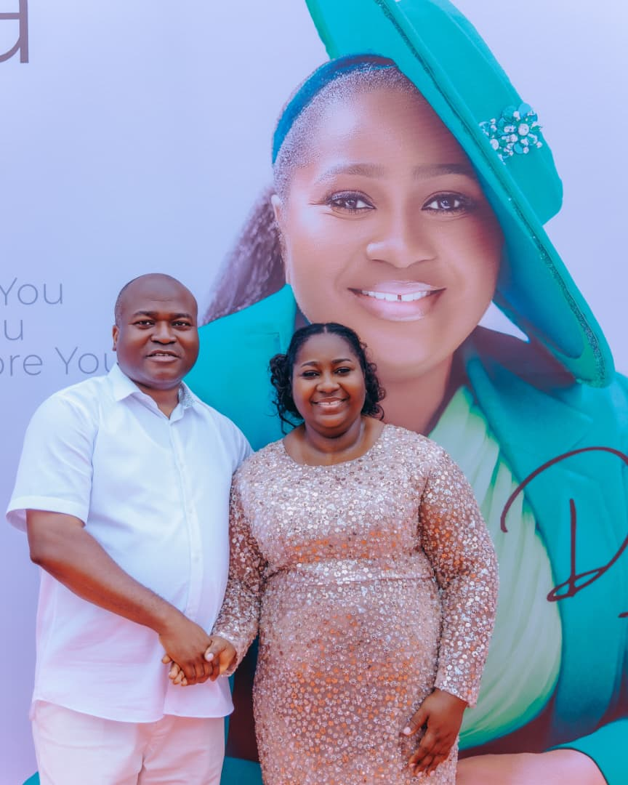
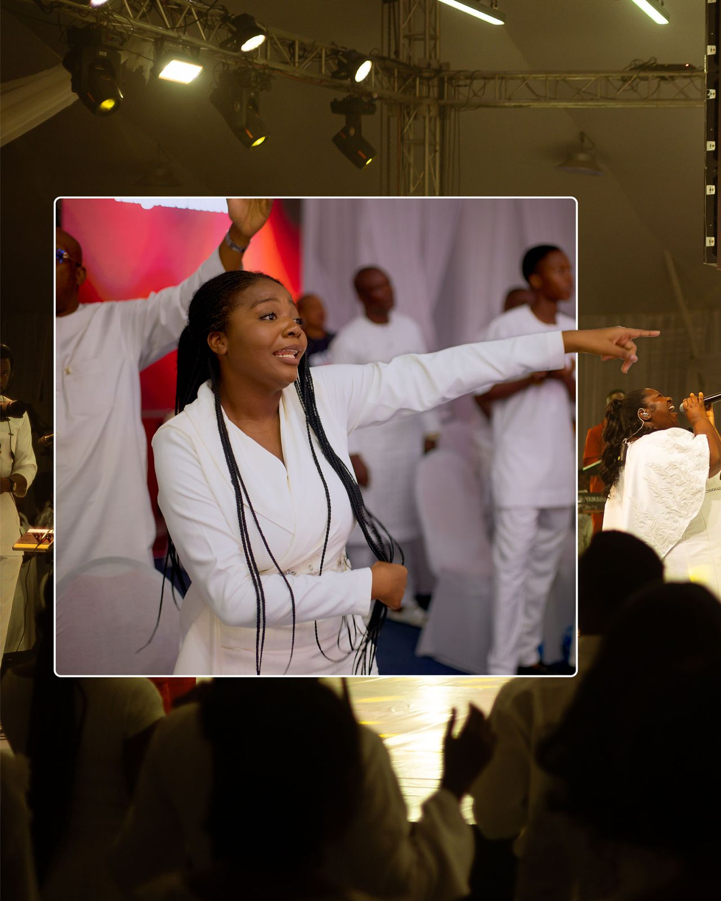

About
Fourteen years, one assignment.
Worship minister. Recording artist. Teacher of the ones coming after. The songs travel; the assignment has never changed.

Covenant sessions, Lagos — March 2025
A note, first
I did not set out to make records. I set out to make room.
The first song came in a hospital corridor at 3am, humming to keep my hands from shaking. Nobody heard it. It was not for anyone. That is still the test I put every song through before it leaves the house: would I sing this if the room were empty?
What I have learned in fourteen years is that worship is not a performance problem, it is a posture problem. Congregations can tell within eight bars whether you are leading them somewhere or asking them to watch you go. So the work has narrowed rather than widened: fewer runs, longer silences, more space for the person in row nine who came in carrying something heavy and has not yet put it down.
The albums — Threshold in 2022, Covenant in 2025 — are simply the parts of that work that held still long enough to be recorded. The rest of it happens in rooms with bad acoustics and beautiful people, most of which nobody films.
And now a good deal of it happens through the ones coming after. Symphony exists because somebody once handed me a microphone before I had earned it, and I have never stopped owing that debt forward.
Ajoke
The Long Way Here
Not a straight line.
Fourteen years, compressed. The gaps between these entries are where most of the actual work happened.
-
2012
A corridor, then a choir stand
Joins the worship team at a 200-seat assembly in Surulere as a backing vocalist. Writes the first eleven songs nobody will ever hear.
-
2015
First ministration outside Nigeria
An invitation to Accra turns into six countries in eighteen months. Learns that a song survives translation only if the silence around it does too.
-
2019
The doctorate, and a decision
Completes doctoral work in music and liturgy. Turns down a touring contract the same month, choosing local church work over a release schedule.
-
2022
Threshold
The debut record — worship reimagined through highlife rhythm and orchestral strings. Threshold itself is cut in a single take at midnight and never re-recorded.
-
2023
Symphony of Praise & Worship begins
The concert and its Talent Quest launch together — nine applicants, one rented rehearsal room, and a hall that was two-thirds full. Four of that first cohort are still working in music today.
-
2025
Covenant
Nine songs about promises kept in the dark, recorded live with a fourteen-piece ensemble in Lagos. The multitracks are later released free to local churches.
-
2026
The fourth Talent Quest — and the Global Concert
Applications open for Talent Quest Vol. IV, and the season comes home to Regal Hall, Daystar Christian Center: the Talent Quest on 27 November, and the SPAW Global Concert on the 28th.
Home
The doorway she actually walks through.
Every song on Threshold is about a door. This is the one waiting on the other side of the work.

Fourteen years of ministry comes with a bill, and most of it is paid quietly at home.
In almost every photograph ever taken of the two of them, her husband is standing half a step behind her — hands in his pockets, just outside the light, and completely unbothered about being outside it. It does not read as shyness. It reads as a decision somebody made a long time ago and has never once gone back to revisit. The reason she can walk into a room and disappear into the worship is that a man at the back of that room settled, years ago, that she would never have to hold herself up.
Their three daughters were the first congregation. Long before a song ever reaches an ensemble or a mixing desk, it gets sung across a kitchen at three of the most honest listeners in Lagos — the kind who will tell you a line isn't finished yet, and be right about it. They have grown up inside soundchecks, learned to sleep through rehearsals, and turned up to every anniversary night in the same colour without needing to be asked twice.
What the girls have quietly taught her is the thing the platform never could: that being known is different from being watched, and that a person needs both, in that order.

This ministry has never been a solo act. It has only ever looked like one from the front.
I don't perform worship. I open a door and stand out of the way.
Dr AjokeSings
What The Work Is Built On
Scripture before sentiment
Every lyric is checked against the text before it is checked against the melody. A line that moves a room but misrepresents God does not make the record.
The room is not the metric
Three hundred people and thirty people get the same preparation. Attendance has never been allowed to set the standard of the ministration.
Give the material away
Chord charts, devotionals, and full live-session multitracks go out free to local churches. If a song can serve a congregation without her in the room, it should.
Always be handing it over
Mentorship is not a side programme, it is succession planning. The point is a generation that no longer needs the person who trained them.


Selected
Recognition & appearances
A partial list. Full press kit and high-resolution images are available on request through the contact page.
- 2026Keynote ministration — West African Worship Leaders Convening, AccraMinistration
- 2025Covenant named Gospel Record of the Year, Lagos Music CircleAward
- 2025Long-form interview — “On Grief and Songwriting”Feature
- 2024Guest lecturer in liturgy and songwriting, University of LagosTeaching
- 2023Founder — Symphony of Praise & Worship talent platformMinistry
- 2022Threshold debuts at number one on the national gospel chartRelease